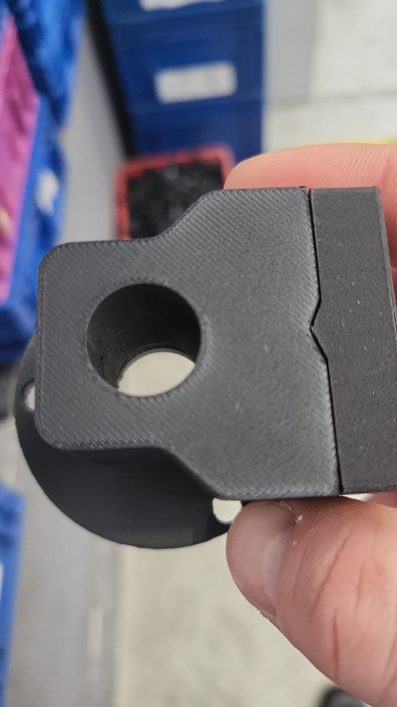
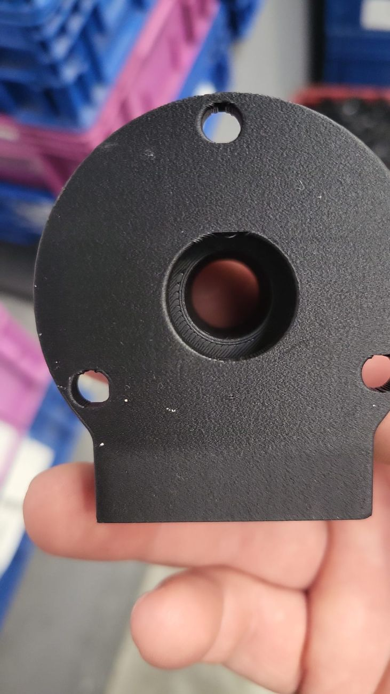
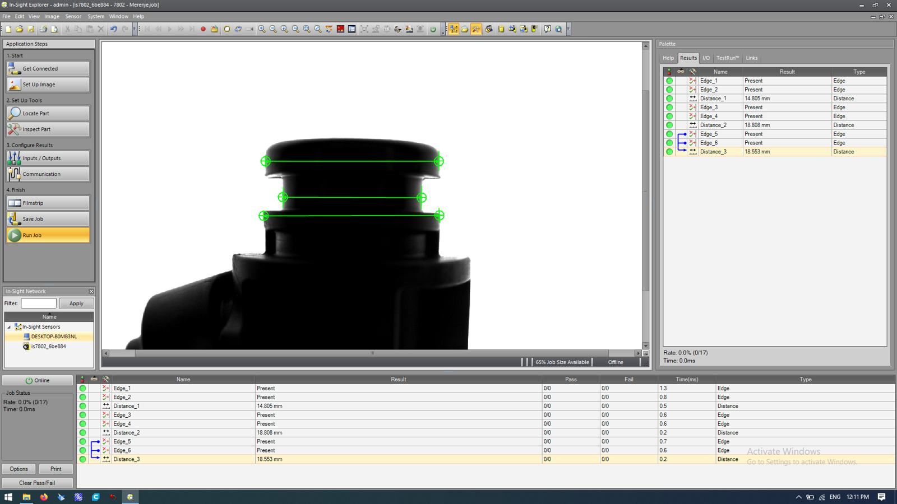
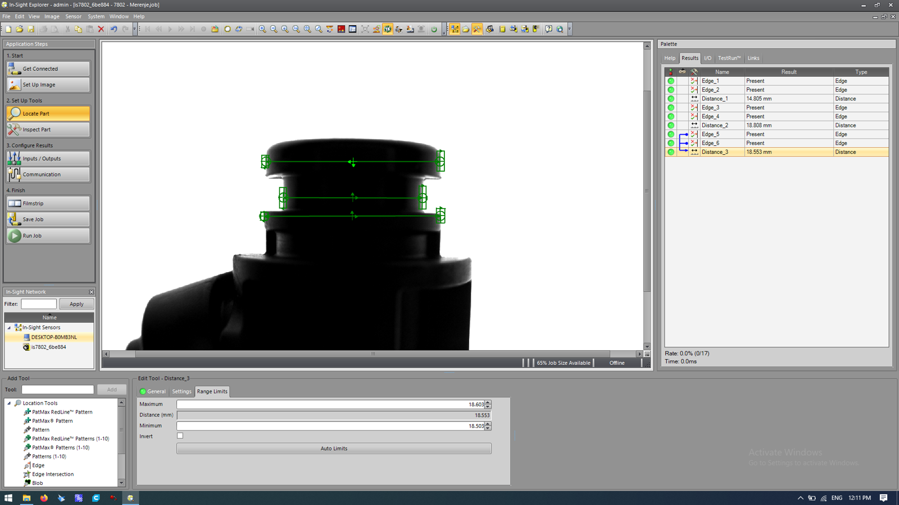
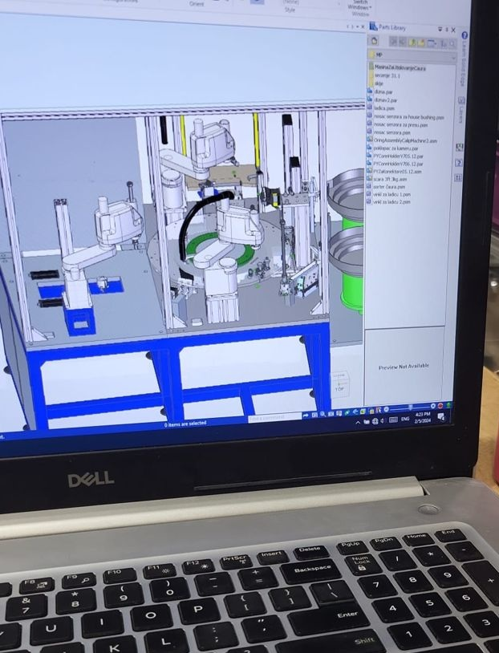
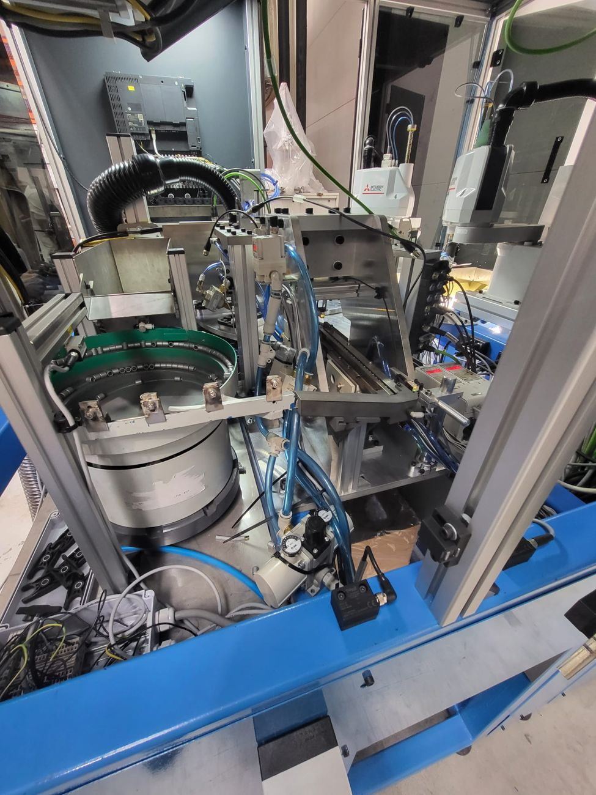
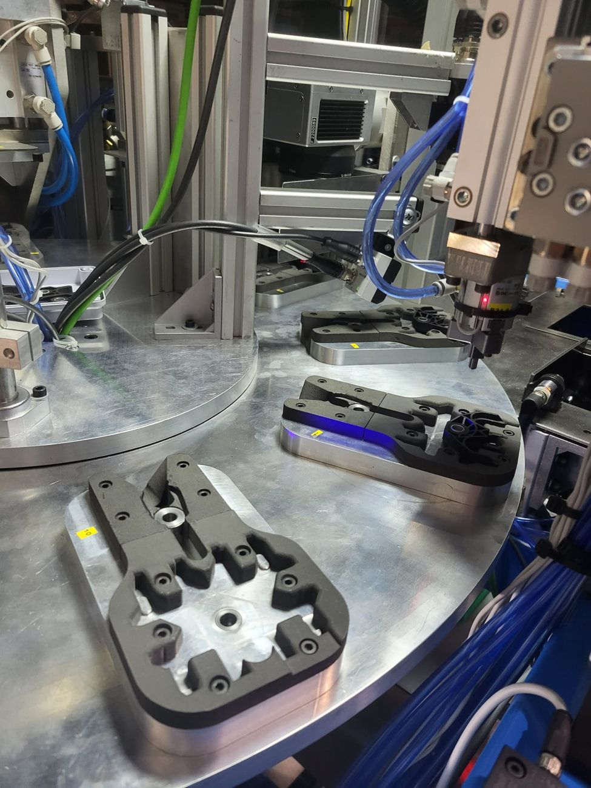
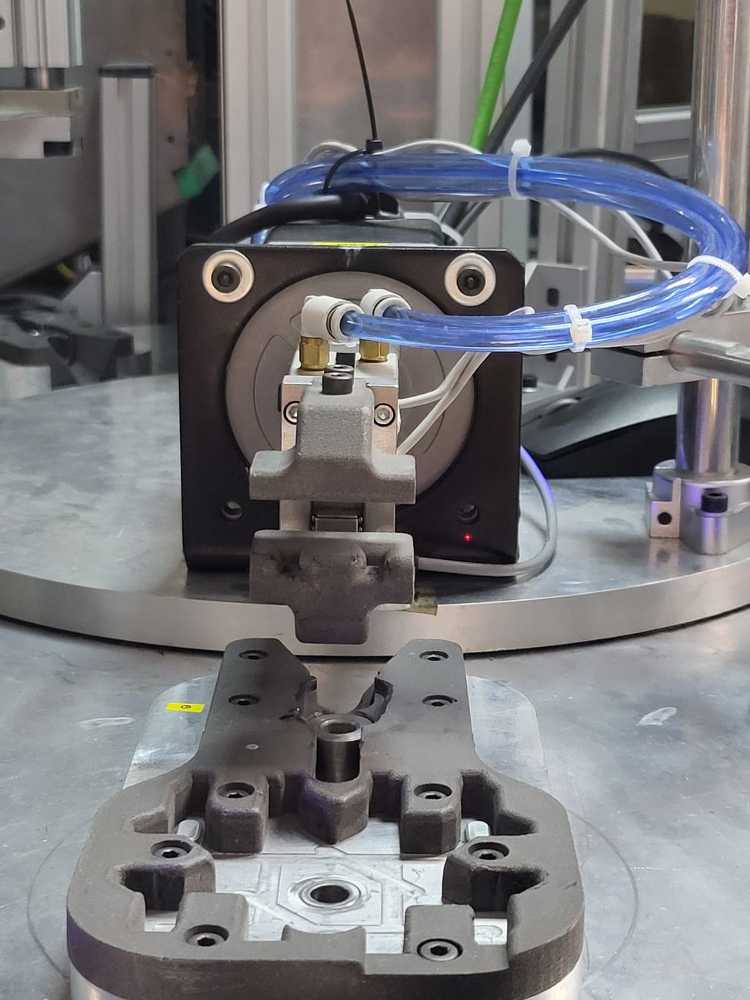
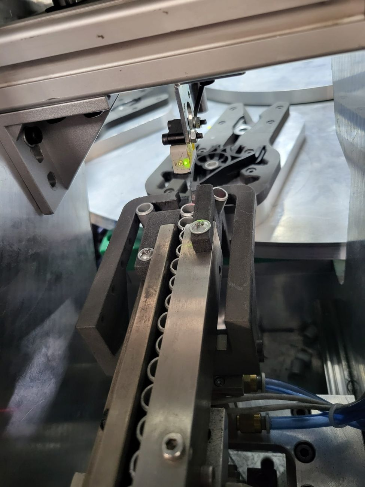
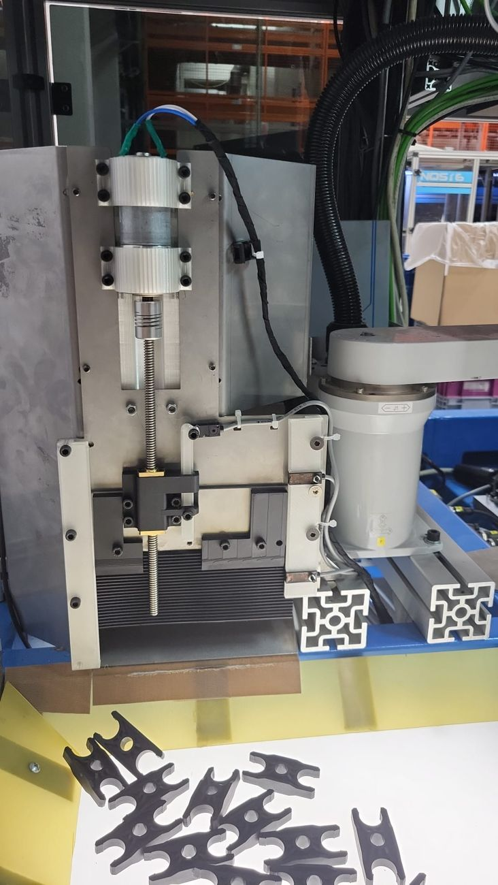

BMW Multi-Variant Automated Assembly Cell
Development and integration of a flexible automated production cell capable of handling seven product references without hardware changeover, combining robotic handling, rotary indexing, machine vision, dimensional verification and rapid prototyping during the development process.


One machine, multiple product variants
The engineering challenge was to create a highly automated assembly system that could process seven different product references while avoiding manual hardware changeover between variants. The cell therefore had to combine flexible part handling, repeatable fixturing, controlled assembly operations and automated verification inside one compact machine architecture.
Different references handled within the same automated cell.
Variant flexibility designed into the tooling and process rather than relying on manual conversion.
Robotic handling used around a rotary/indexing architecture and multiple process stations.
Vision-based dimensional checks integrated into the automated process.
R&D mechatronics across machine design, integration and iteration
My work covered the practical development of the machine and its subsystems: CAD-based design and modification, development of fixtures and handling concepts, rapid prototyping, robot/process integration, sensor and pneumatic integration, machine-vision measurement, testing and iterative improvements during commissioning of the system.
Mechanical & fixture development
Developed and modified tooling, nests, holders and machine interfaces needed to position different part variants repeatably.
Robotics & automation
Worked with Mitsubishi robotic systems, rotary indexing stations, sensors, pneumatic actuators and automated handling sequences.
Machine vision
Configured SensoPart camera-based feature detection and dimensional measurement logic for automated inspection of critical geometry.
Development iteration
Used CAD, rapid prototypes and physical machine testing to shorten the loop between design idea, fit check and functional validation.
Fast development of fixtures and handling concepts
Rapid prototyping was a core part of the development workflow
Instead of waiting for every development iteration to be manufactured as a final machined component, prototype parts were produced quickly and tested directly against real geometry and machine interfaces. This allowed fixture shapes, clearances, support surfaces and handling concepts to be evaluated early and modified before committing to final hardware.
The approach reduced iteration time between CAD and machine testing and made it possible to verify concepts physically during R&D.


Integrated process flow
Components supplied to the cell through dedicated feeders and handling interfaces.
Parts located and positioned in repeatable nests or process fixtures.
Robots move components between process and assembly stations.
Automated operations bring the component set into the required assembly state.
Vision system detects edges/features and measures defined dimensions.
Validated components continue through the automated production sequence.
Dimensional verification integrated into production
The inspection setup used SensoPart machine-vision cameras for edge detection and dimensional measurement of key part geometry. Defined measurements could be checked against limits so the automated cell could distinguish acceptable geometry from an out-of-range condition as part of the production process.


From CAD model to working cell






Flexible automation built through fast iteration
The project combines several areas of mechatronics engineering in one system: mechanical design, robotic handling, fixturing, pneumatics, sensors, machine vision and practical commissioning. Rapid prototyping was especially valuable because it allowed mechanical ideas to be tested quickly against the real machine, supporting faster development of a flexible multi-variant assembly concept.